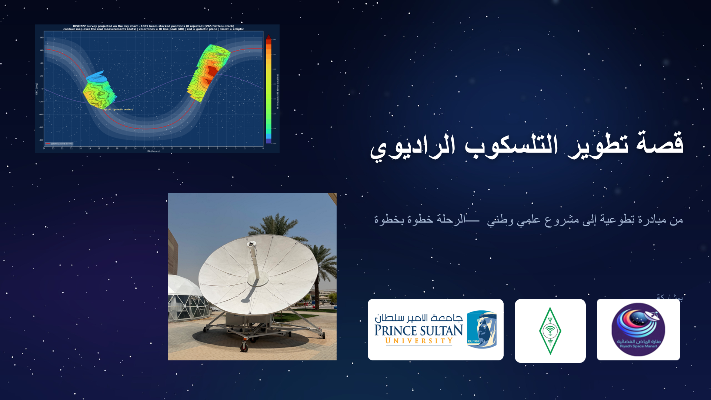

قصة تطوير التلسكوب الراديوي

تفتح الشريحة المحاضرة بوصفها قصة تطور مشروع، لا مجرد شرح علمي منفصل. ظهور الجهات المشاركة يضع المشروع في سياقه الوطني والتطوعي، ويُمهّد لتتبع الرحلة من الفكرة إلى منظومة رصد قادرة على إنتاج بيانات فلكية.
تفاصيل أكثر
- قصة تطوير التلسكوب الراديوي
- من مبادرة تطوعية إلى مشروع علمي وطني — الرحلة خطوة بخطوة
- بمشاركة